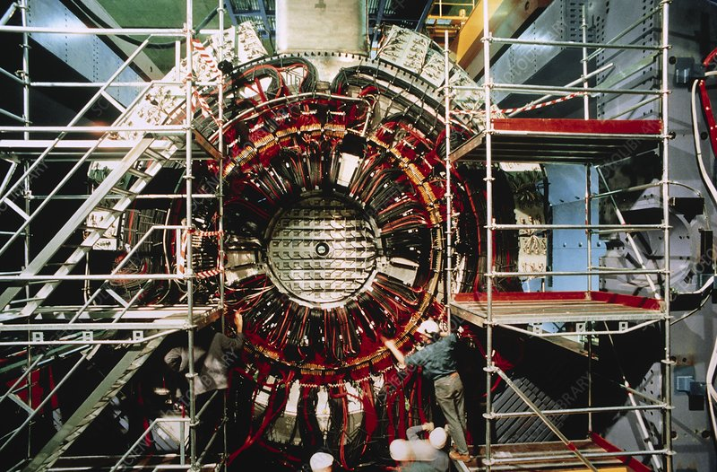
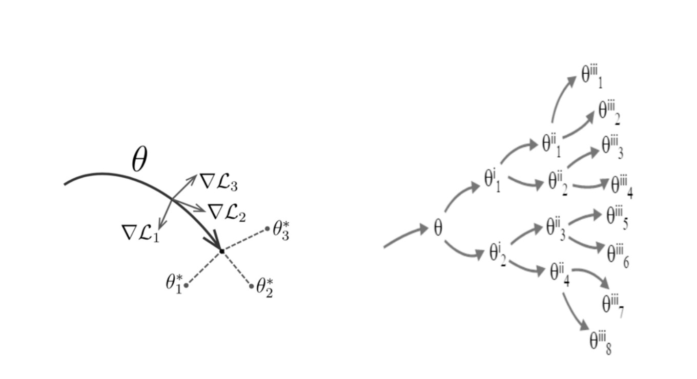
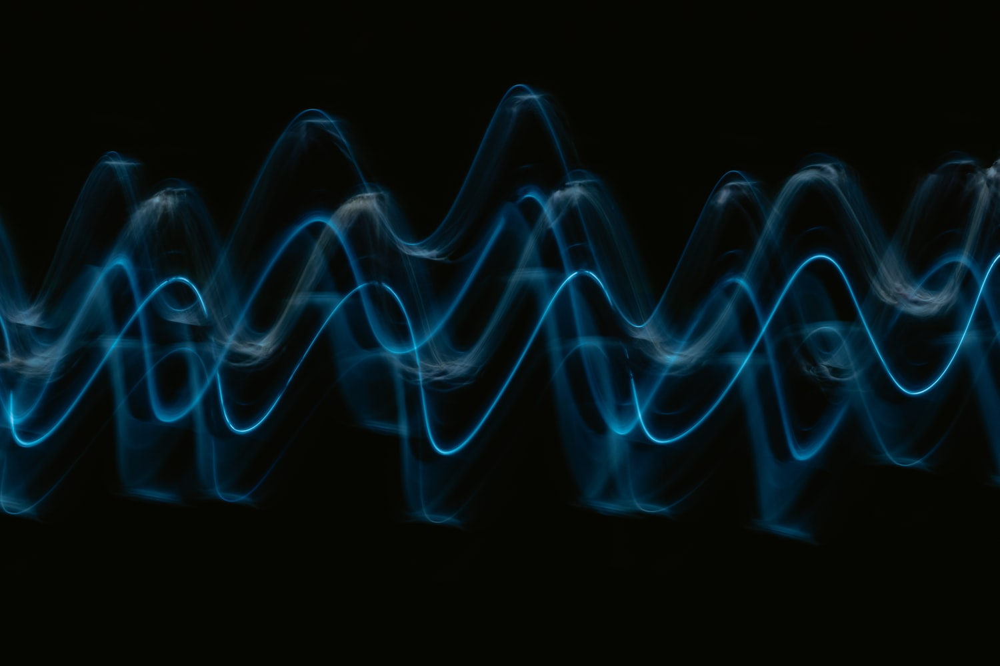
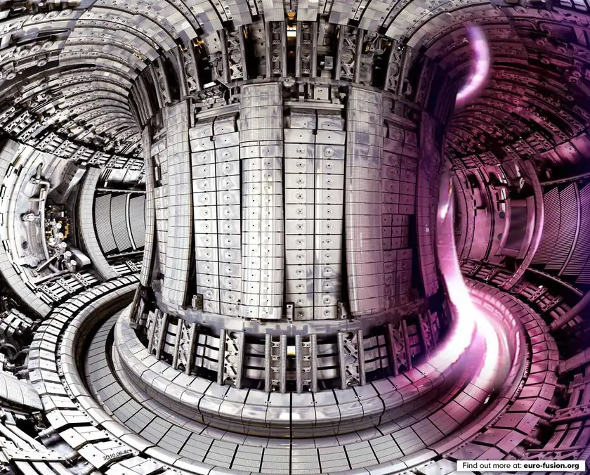
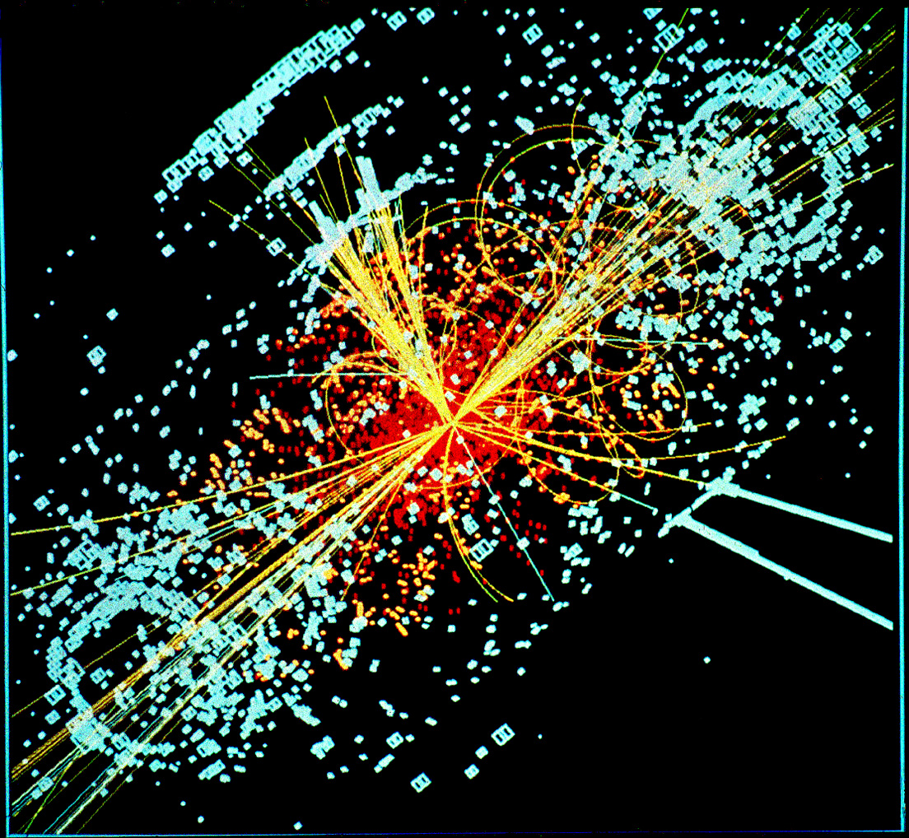
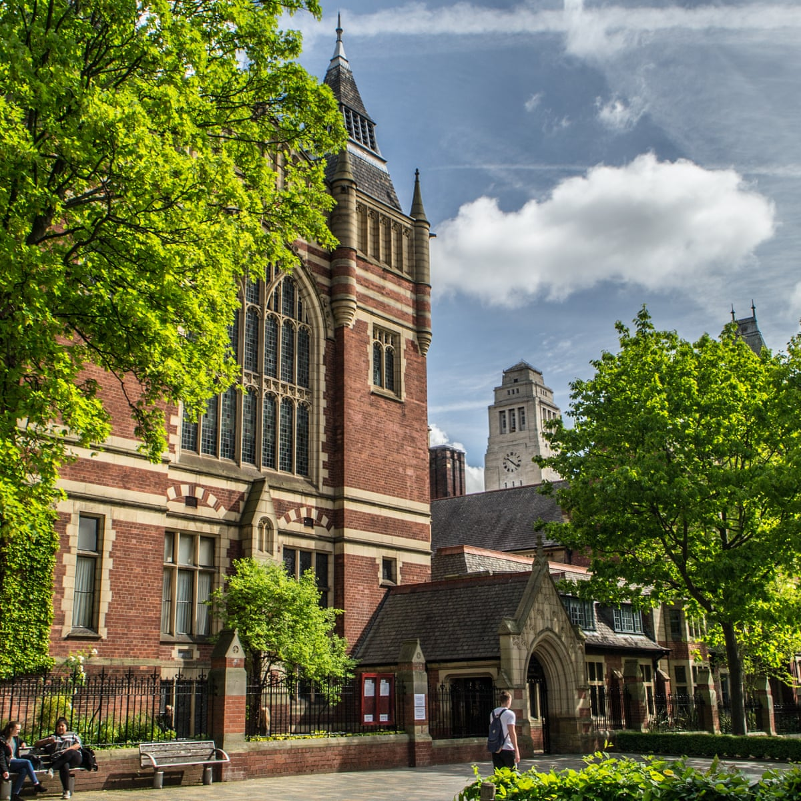
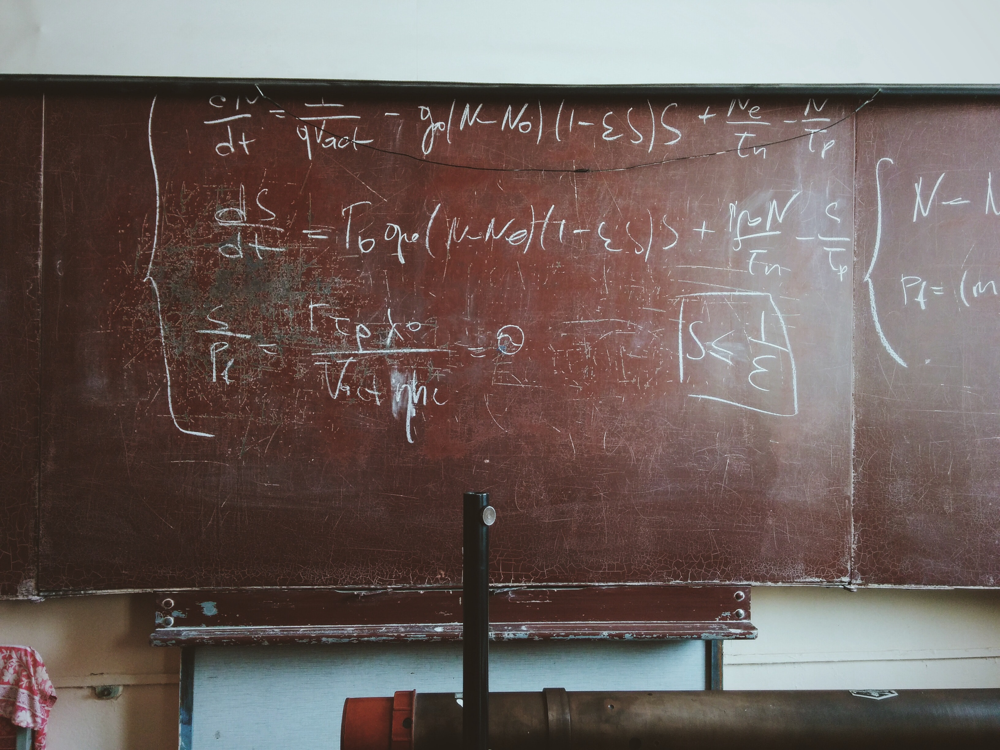

About Me
I am a final year Postgraduate student studying for a Ph.D. in
Particle Physics at UCL. I recently graduated with
a Masters in Theoretical Physics from the University
of Leeds. I have professional experience in Machine
Learning and I am experienced in approaching problems
in a logical and mathematical way. I am interested in
pursuing a career in research.
In my spare time I enjoy writing fun and accessible Machine Learning based
coding projects (some of which can be found on my
GitHub), playing tennis,
going to the gym and cooking.

UCL Postgraduate Researcher
I am currently studying for a PhD in the High Energy Physics Group at UCL. I am working on a theoretical particle physics project, in which I am researching into developing the theory behind Parton Distribution Function (PDF) fits, making use of data from particle physics experiments. PDFs are probability functions which describe the interior of the proton and are essential in modern theoretical calculations. My work is based on using Hessian approaches to quantify theoretical uncertainties in perturbative quantum field theory predictions.

Meta-Learning Internship
During this internship I was part of a team focused on applying a MAML meta-learning algorithm to a hierarchically structured set of tasks. The end goal of this project was to test our algorithm on the phylogenetic language tree. We achieved a higher accuracy on NLP tasks with languages with minimal training data from exploiting cross lingual transfer through the phylogenetic language tree. This work was then subsequently published in EACL Adapt-NLP 2021 (here).

The Alan Turing Institute Data Study Group
As part of a two week Data Study Group event, I worked as part of a multidisciplinary team to develop a Podcast Recommendation System for a startup company named Entale. We managed to achieve `Rabbit Hole' style recommendations using NLP techniques and topic modelling which gives the user a unique listening experience. This work is currently ongoing and in the process of being submitted for publication.

UKAEA Computer Vision Project
I was involved in a collaborative team of Ph.D students from UCL who were tasked with maximising the potential of the camera systems used at the Culham Centre for Fusion Energy through image processing and stabilisation techniques. Our results showed promising solutions which helped alleviate some of the main issues of maintaining a fixed coordinate system and was part of an initial effort to automate the stabilisation of visual data used to analyse the plasma inside the nuclear fusion reactor.

University of Leeds
For my Masters thesis I performed research into the unification of the Standard Model gauge group. Within this project I made use of leading theories such as supersymmetry along with different candidates for the elusive unification group. This research was an attempt to recover the Standard Model at low energies without any unwanted physics resulting from the symmetry breaking chain.

HTCf Collaboration
This programme was part of the Healthcare Technology Co-operative, where students from disciplines such as Physics, Medicine, Engineering and Chemistry were brought together in a multidisciplinary group. The purpose of this collaboration is to learn about the real-world process of concept innovation, and actually develop a concept to tackle a current surgical challenge.

BUSTEPP Theoretical Physics Summer School
During my Ph.D. I attended a two week intensive Summer School at the University of Glasgow. During this time we covered various topics across Theoretical Particle Physics and Mathematical techniques related to Particle Physics. As part of the school, we also gave talks and answered questions related to our own research topics.
Achievements & Interests
Here is a list of my academic achievements and also what I like to spend time pursuing outside of my research.
-
Machine Learning
I have a strong interest in Machine Learning and take any opportunity to learn about and practice new techniques and skills, as demonstrated by my experience and in my GitHub. I love reading books about deep learning and following the mathematics of how these algorithms work in practice. I also enjoy learning about neuroscience and relating the computational side back to the inspiration from biology.
-
Scientific Writing and Outreach
Recently I have begun to write and publish scientific blog posts on my Medium page. I really enjoy attempting to explain my research and other complicated scientific topics to a much wider audience and have several more articles I hope to publish before the end of the year.
-
Research and Leadership Scholarship
During my second year at the University of Leeds, this scholarship was awarded to two students in my cohort to enable us to partake in research projects and develop our leadership skills.
-
Deans Execellence Award
I was awarded the Deans Excellence Scholarship in my first year at the University of Leeds for being one of the top academically performing students in my cohort.
-
Udacity Nanodegree Scholarship
More recently I was awarded a scholarship to study an AI nanodegree with the online platform Udacity. This was aimed towards managing an AI product and using AutoML to put the product into production.
-
Teaching Experience
Throughout my PhD I have been actively involved in teaching and marking several Undergraduate courses including Software Carpentry, Python and core Physics/Maths modules. I am passionate about communicating science effectively and this experience has allowed me to develop these skills.
-
Undergraduate Research - Theoretical Physics
Within the theory group at Leeds I used many-body Physics to research into a phase of matter called a ’Time Crystal’. I was able to simulate this phase of matter with an ordered Hamiltonian using a system of spins modelled on Python software. After this was achieved, I altered the parameters of the system to attempt to map out phase boundaries of this state. It was found that introducing a small perturbation into this Hamiltonian would cause the system to thermalise and so was therefore an unstable state. This research is currently ongoing and new Hamiltonian terms are being used to attempt to achieve a more stable time crystal state with an ordered Hamiltonian to be used for applications in quantum computing.
-
Undergraduate Research - Quantum Matter Physics
During this summer placement, I researched into the effects of C60 layers incorporated into thin film magnets. I was trained on various pieces of equipment in the labs and then able to independently conduct my own research using samples grown in a sputtering lab. I then measured various properties of these samples using equipment such as a SQUID-VSM and a Raman spectrometer. Each sample had a slightly different thickness of the C60 layer which then gave us an optimum thickness for the coercive field and saturisation magnetisation of this certain composition of layers.
-
Physics Society Commitee Member
Organisation and group leader for trips abroad for around 30 students to locations such as Amsterdam and CERN in Geneva. This also involved applying and pitching for grants and funding to bring down costs to make sure each trip was accessible to all students from all backgrounds.
-
Student Ambassador
As part of one of the scholarships I held during my time at Leeds, I was involved in the organisation of university open days and research talks at events for students and alumni on a regular basis. I was also a student representative in the design and construction of the new Physics building at the University of Leeds.
-
Courses & Certifications
Below I have a list of selected courses I have completed outside of my Ph.D.
Udacity Deep Learning with PyTorch
Machine Learning with Big Data UCL
Microsoft AI Azure Fundamentals
Udacity AI Project Manager Nanodegree
Codecademy SwiftUI Skill Path
For a full list please check my LinkedIn
Contact Me
Feel free to contact me via this link or find and follow/connect with me via the social media links below.